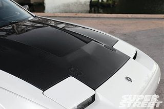

-
Is anyone manufacturing the TBO lip any more or is this a discontinued thing? I remember Gary Molitor and co. were doing it a while back but my searches have not been successful to find any vendors still reproducing this front lip.
Ideas?
-
http://www.thezstore.com/page/TZS/PR…02a03b/50-1616
http://www.thezstore.com/page/TZS/PR…02a03b/50-1618
http://www.mjpshop.co.uk/index.php?r…product_id=506
In any case you would have to organize shipping yourself. At these dimensions air mail is ridiculously expensive. -
Yeah I hear that.
I'm annoyed I didn't get onto this earlier - Proudear in Japan had the sickest exterior mods like these lips and the carbon fiber hood I wanted that has a slotted vent in the front. They've gone out of business
-
The plan for the race car is to use the S2 bonnet and headlight covers as a one piece mould to make a vented rear opening replacement, obviously not suited for a road car. The point is it's not that hard to make custom parts if you have something to start with a suitable original part. -
I'm a little bit upset about it because I wanted this - and Proudear have gone out of business. I know full well somewhere in Japan there is a warehouse with a pile of these stacked somewhere!
 -
I got the quote on shipping - it's 3 x that of the part itself but if you cant get it anywhere else so not much choice.Originally posted by kaur View Post
What I am noticing however and I didn't even think of this until just now, the "JDM" aka TBO lip is originally for a 200ZR which we all know has the S1 style front guards. The MJPSHOP link talks about making modifications to fit the S2 car. The Z store makes no mention of this and it's pictured with an S2 fitted.
Has anyone got the details on this? -
I can only speculate here, but the TBO lip was aftermarket so it may have been based on the 200ZR lip and modified to fit the 300ZX. MSA sells a replica of the TBO lip so it should fit fine. MJP shop sells a replica of the 200ZR lip. I don't know how different they really are. Maybe someone who knows that history better can clarify. -
I'm not sure of your location, but this TBO replica regularly pops up on the Japan auction sites. Looks to be designed for the wider 300ZX fenders, rather than 200ZR.
https://www.rinkya.com/en/auction-w1…62?dollar=part'86 300ZXT GLL
'78 Datsun 280Z BP
'11 Saab 9-3 Aero XWD -
That's the other one I've seen yeah. I think the difference is the one for the 200zr has the seam moulded in to match the fender whereas these look smoothed out. -
Negative, all hoods where made to order since there where a lot of various options for weave, resin, scopes ect…Originally posted by 300zxt View Post
If someone wants to purchase the shiro it comes with the hood 86na - BlueZ
86na - BlueZ
Shiro #366 - Kouki Monster
85t - Mr Tickles -
Gary and TheZstores TBO's have fitment issues. They have always had fitment issues that require a good amount of finessing to get good fitment. But in general TBO from J-land and Prodear always came with extra material that required trim to fit.
TheZstore SS lip on the other hand has much better fitment right out of the box.86na - BlueZ
Shiro #366 - Kouki Monster
85t - Mr Tickles -
Damn that's not what i wanted to hear. Which is easier? lol What's the issue with them? Are they oversized and need trimming?Originally posted by adamvann3 View Post -
I had issues with the passenger side 'leg' not being long enough to want to wrap around the wheel well in the fender. I know MikeG had the same issues.Originally posted by 300zxt View Post
I am unsure if the issue is in the radii bend or the side piece length itself. I had to do a lot of trimming to get it where I wanted.86na - BlueZ
Shiro #366 - Kouki Monster
85t - Mr Tickles -
That's sounding pretty shit - I dont even pretend I am a bodywork guy so I don't want to pay $500 labour to mount a $200 lip.

Copyright © 2006–. All rights reserved. Privacy Policy